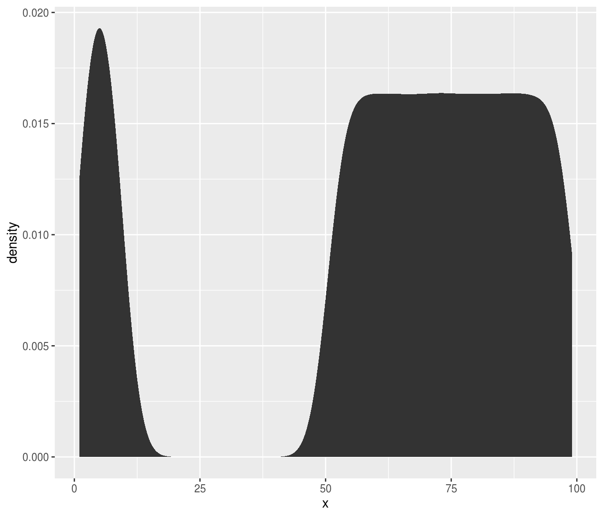

Most of the examples from this package are centred around thresholding images, but really the core function auto_thresh() can be used to find thresholds for any non-negative integer data.
Let’s create a vector of values, most of which are greater than 50, the rest of which are less than 10:
x <- c(sample.int(9, 2e5, replace = TRUE), sample(51:99, 8e5, replace = TRUE))Now let’s take a look at the distribution of x:

If you’re trying to threshold this sort of data, you’re probably looking for a method which will find a threshold that separates the larger values from the smaller ones. The available automatic thresholding methods are “IJDefault”, “Huang”, “Huang2”, “Intermodes”, “IsoData”, “Li”, “MaxEntropy”, “Mean”, “MinErrorI”, “Minimum”, “Moments”, “Otsu”, “Percentile”, “RenyiEntropy”, “Shanbhag”, “Triangle” and “Yen”. These are well demonstrated at https://imagej.net/Auto_Threshold.
“MaxEntropy” and “Yen” often fail to find a threshold, so I generally avoid them. Let’s try out all the rest.
library(autothresholdr)
thresh_methods <- c(
"IJDefault", "Huang", "Huang2", "Intermodes", "IsoData",
"Li", "Mean", "MinErrorI", "Minimum", "Moments", "Otsu",
"Percentile", "RenyiEntropy", "Shanbhag", "Triangle"
)
thresholds <- purrr::map_chr(thresh_methods, ~ auto_thresh(x, .)) %>%
tibble(method = thresh_methods, threshold = .)
print(thresholds)
#> # A tibble: 15 x 2
#> method threshold
#> <chr> <chr>
#> 1 IJDefault 40
#> 2 Huang 9
#> 3 Huang2 9
#> 4 Intermodes 39
#> 5 IsoData 40
#> 6 Li 25
#> 7 Mean 60
#> 8 MinErrorI 60
#> 9 Minimum 33
#> 10 Moments 56
#> 11 Otsu 9
#> 12 Percentile 68
#> 13 RenyiEntropy 70
#> 14 Shanbhag 70
#> 15 Triangle 11Now, which of these selected a threshold between 10 and 49?
filter(thresholds, threshold >= 10, threshold <= 49)
#> # A tibble: 6 x 2
#> method threshold
#> <chr> <chr>
#> 1 IJDefault 40
#> 2 Intermodes 39
#> 3 IsoData 40
#> 4 Li 25
#> 5 Minimum 33
#> 6 Triangle 11The other methods aren’t necessarily wrong, they’re just more strict or more lax than these ones. For thresholding microscopy images to remove background, my favourite methods are “Huang” and “Triangle” because they are quite conservative in that anything even slightly above background is kept.
auto_thresh(x, "huang")
#> [1] 9
#> attr(,"ignore_black")
#> [1] FALSE
#> attr(,"ignore_white")
#> [1] FALSE
#> attr(,"ignore_na")
#> [1] FALSE
#> attr(,"autothresh_method")
#> [1] "Huang"
#> attr(,"class")
#> [1] "th" "integer"
auto_thresh(x, "tri")
#> [1] 11
#> attr(,"ignore_black")
#> [1] FALSE
#> attr(,"ignore_white")
#> [1] FALSE
#> attr(,"ignore_na")
#> [1] FALSE
#> attr(,"autothresh_method")
#> [1] "Triangle"
#> attr(,"class")
#> [1] "th" "integer"
auto_thresh(x, "otsu")
#> [1] 9
#> attr(,"ignore_black")
#> [1] FALSE
#> attr(,"ignore_white")
#> [1] FALSE
#> attr(,"ignore_na")
#> [1] FALSE
#> attr(,"autothresh_method")
#> [1] "Otsu"
#> attr(,"class")
#> [1] "th" "integer"